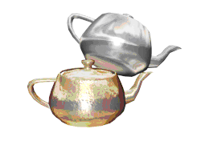
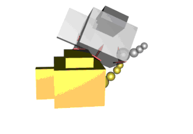
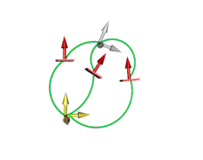

Actors are the protagonists of a simulation. In the current version of the SDK, actors have two basic roles: static objects, fixed in the world reference frame, or dynamic rigid bodies. We do not use the word "body" to describe all of them because body refers only to dynamic (moving) rigid bodies.
One important aspect of actors is that they can have shapes assigned to them. Collision detection ensures that the shape of one actor does not intersect with the shape of another actor. Shapes can also be used to trigger various behaviors when another shape intersects them. Shapes and Triggers are discussed in detail in the Collision Detection section.
Static actors’ primary purpose is collision detection, so they should always have shapes assigned to them. Dynamic actors, on the other hand, may represent abstract point masses, which can be connected with joints to form pendulums and similar mechanisms. It is possible, though not always necessary, to add shapes to such bodies. Kinematic actors are a special kind of dynamic actor.
According to the laws of physics, any rigid object of any shape may be perfectly represented by an intertia tensor and by a point mass located at the object's center of mass. This is the approach used by the NVIDIA PhysX SDK and most other rigid body dynamics libraries. The SDK will optionally compute the inertia properties of the bodies using the assigned shapes, or the user can supply custom parameters.
The below images show three different ways that the same scene is represented: graphical, collision detection, and dynamics.
|
 |
 |
|
The graphical representation of a scene with two stacked teapots. This is what the user would see. The graphics engine works with the mesh and texture data needed for such a representation. This graphical representation is provided by the user and is not included in the Physics SDK. |
The same scene, from the perspective of the SDK's collision detection functions. In this case the teapots are approximated with a set of bounding volumes. It is also possible to use a more accurate mesh representation. |
|
 |
|
|
Finally, the representation of the scene used for dynamics. The contacts provided by collision detection are associated with the frames representing the bodies' masses. |
|
To create an actor, call the createActor() method of the scene object that is to contain the actor. You must, as usual, pass an actor descriptor:
NxActorDesc actorDesc;
actorDesc.globalPose = ...;
gScene->createActor(actorDesc);
Specify the position and orientation of the actor in the scene (NxActorDesc::globalPose), an optional density, its dynamics and surface material properties, and any eventual collision detection shapes. All these settings have working default values. As we discuss the features of the actor, keep in mind that many of the settings can be changed either via the descriptor or via a set*() method. The NxActorDesc class contains an NxArray object for storing a list of shapes. To redirect this array's heap allocations, you can use the NxActorDesc_Template<Allocator> form.
Note: Some resources relating to actors are not released until the engine goes through a simulate() call. Therefore, you should not allow unrestricted repeated creation and deletion of actors without any intervening calls to simulate().